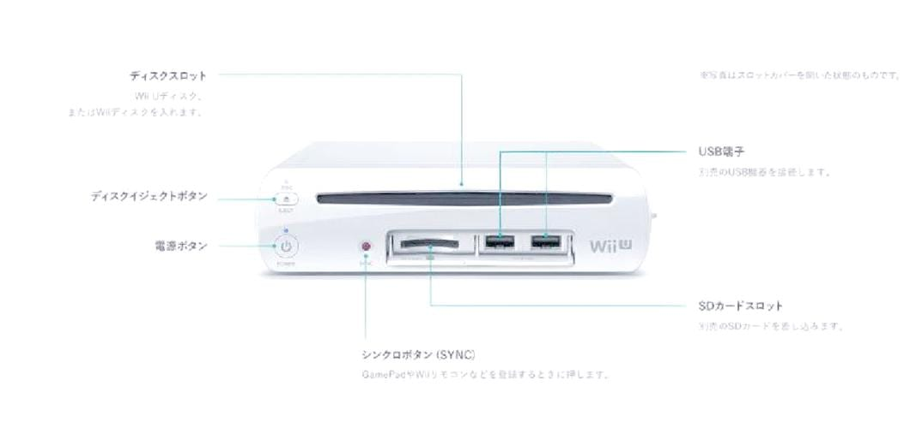

任天堂 Wii U

带平板手柄的双屏主机，被低估的创意过渡之作。
客观评测
Wii U 搭载 IBM 三核 PowerPC 1.24GHz CPU 与 AMD 定制 550MHz GPU，2GB 内存（游戏可用 1GB），输出 1080p，性能大致与 PS3 相当。核心创新是 6.2 英寸触屏 GamePad，支持非对称双屏玩法与 NFC。向下兼容 Wii 游戏。实测《马力欧赛车 8》画面流畅，GamePad 串流延迟低，但第三方 3A 大作几乎缺席。
主观点评
GamePad 拿在手里像抱着一台小平板，躺在沙发上用它直接玩主机游戏的体验确实奇妙。《斯普拉遁》的涂地对战让人上瘾，《异度神剑 X》的宏大世界令人惊叹。可惜它夹在 Wii 与 Switch 之间定位尴尬，被市场严重低估。回头看，它是 Switch 的完美预演：双屏、触控、掌机化主机的思路在它身上已初见雏形。
优点与不足
- GamePad 双屏玩法新颖，非对称对战创意十足
- 《斯普拉遁》《马力欧赛车 8》等神作在此发端
- 向下兼容 Wii，体感游戏库无缝衔接
- 主机性能弱于同期 PS4/Xbox One，第三方大作缺席
- GamePad 续航仅 3-5 小时，营销定位混乱
参数规格
| 视频输出 | 1080p 输出，支持非对称双屏游戏，HDMI |
|---|---|
| 处理器 | IBM PowerPC 三核定制 CPU，1.24GHz |
| 图形 | AMD RV7x0 系定制 GPU，550MHz |
| 内存 | 2GB 主内存（1GB 供游戏 + 1GB 供系统） |
| 存储 | 8GB / 32GB 闪存，支持 SD 卡扩展 |
| 手柄 | GamePad 平板手柄，6.2 英寸触屏 + 摇杆 + NFC |
| 网络 | Wi-Fi 802.11n、支持 Miiverse 社区与视频通话 |
| 兼容 | 向下兼容 Wii 手柄与游戏 |
| 首发大作 | 《新超级马力欧兄弟 U》《马力欧赛车 8》《斯普拉遁》 |
| 尺寸重量 | 主机 46×172×269mm 约 1.6kg；GamePad 约 500g |